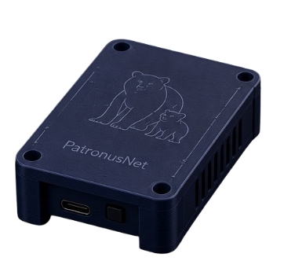

Hardware
O PatronusNet Device utiliza um microcontrolador ESP32 como base para criar uma camada física, portátil e de baixo consumo.
O PatronusNet é um projeto acadêmico que combina hardware, software, redes e inteligência para desenvolver uma abordagem local e acessível de proteção digital.
Hardware + Software
O PatronusNet foi pensado como um projeto acadêmico para explorar como hardware, software, redes e inteligência podem trabalhar juntos em uma solução de proteção digital.
O PatronusNet Device utiliza um microcontrolador ESP32 como base para criar uma camada física, portátil e de baixo consumo.
A extensão PatronusNet Browser amplia o controle diretamente durante a navegação, permitindo configurar políticas e filtros.
Os diferentes componentes foram pensados para trabalhar em conjunto, formando um ecossistema de proteção mais flexível.
Cada parte do PatronusNet possui uma função específica dentro da arquitetura da solução.

Um dispositivo portátil desenvolvido com ESP32 para atuar como parte da infraestrutura de proteção.
Uma extensão para navegador que adiciona recursos de controle, filtragem, políticas e moderação à experiência de navegação.
Uma das premissas do PatronusNet é priorizar o processamento local sempre que possível, reduzindo a necessidade de enviar informações de navegação para serviços externos.
A arquitetura foi pensada para manter o controle das configurações e dos dados utilizados pela solução o mais próximo possível do ambiente protegido.
Prioridade para processamento realizado no próprio ambiente.
Configurações e políticas permanecem sob controle do ambiente protegido.
Recursos de análise e IA podem auxiliar na classificação e moderação conforme a arquitetura da aplicação.
Um projeto acadêmico desenvolvido através da colaboração entre estudantes e orientação acadêmica.

Atua no desenvolvimento da interface, experiência do usuário, segurança e integração de recursos inteligentes e de IA ao projeto.

Atua no desenvolvimento do processamento de rede, filtragem de conteúdos e integração dos módulos de proteção.

Professor orientador e supervisor técnico, responsável pelo acompanhamento acadêmico e validação do projeto.
ESP32, comunicação de rede, sensores e componentes eletrônicos.
HTML5, CSS3 e JavaScript para interfaces e experiências responsivas.
APIs do navegador, armazenamento local e gerenciamento de políticas.
Comunicação, filtragem, DNS e controle de tráfego conforme a arquitetura do projeto.
Explore o dispositivo portátil, conheça a extensão para navegador e descubra como os diferentes componentes do PatronusNet trabalham juntos.